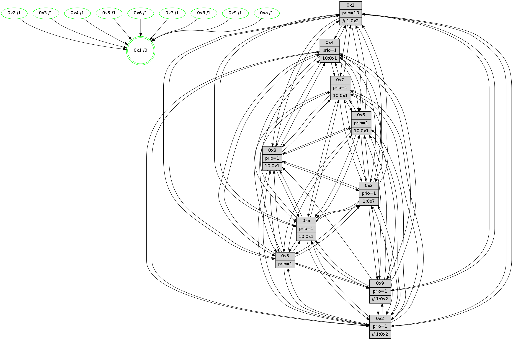

>> << IDX [start] -100 -25 -5 +0 +5 +25 +100 [880.002743006]
 Previous packets
----------------------------------------------------------------------
875.253975 beacon01(faad) #0 coord=01,02,03,04,05,06,07,0a,09,08 cycle=688.0ms assoc
-- color-indic=1 64 48 e9
875.263958 beacon02(faad) #0 coord=01,02,03,04,05,06,07,0a,09,08 cycle=688.0ms assoc 64 db d8
875.273958 beacon03(faad) #0 coord=01,02,03,04,05,06,07,0a,09,08 cycle=688.0ms assoc 64 a1 95
875.283958 beacon04(faad) #0 coord=01,02,03,04,05,06,07,0a,09,08 cycle=688.0ms assoc 64 d6 7f
875.293958 beacon05(faad) #0 coord=01,02,03,04,05,06,07,0a,09,08 cycle=688.0ms assoc 64 ac 32
875.303957 beacon06(faad) #0 coord=01,02,03,04,05,06,07,0a,09,08 cycle=688.0ms assoc 64 22 e5
875.313958 beacon07(faad) #0 coord=01,02,03,04,05,06,07,0a,09,08 cycle=688.0ms assoc 64 58 a8
875.323961 beacon0a(faad) #0 coord=01,02,03,04,05,06,07,0a,09,08 cycle=688.0ms assoc 64 29 a3
875.343964 beacon08(faad) #0 coord=01,02,03,04,05,06,07,0a,09,08 cycle=688.0ms assoc 64 dd 39
875.355194 [Hello(1): seq=469 sym=4,2,9,5,10,3,8,6,7 sysInfo=coloring-mode-on,ColoringModeRequestCalled stat=4:6,0,7,0/2:13,10,2,10/9:5,11,3,2/5:9,7,11,3/10:5,7,1,0/3:3,14,1,1/8:7,9,2,0/6:0,1,0,8/7:0,2,6,11]
875.359151 [Hello(2): seq=556 sym=4,5,7,6,3,9,8,10,1 sysInfo=hasWarning stat=4:0,3,0,4/5:6,11,4,0/7:13,5,10,8/6:9,4,4,6/3:12,13,2,4/9:4,0,3,1/8:6,2,1,7/10:3,9,2,7/1:13,1,0,1]
875.362604 [Color(2) seq=205 @0:0 prio=1 >>1.@2,1.@3,1.@4]
875.364893 [Hello(5): seq=560 sym=7,6,4,3,1,9,8,10,2 sysInfo=hasWarning stat=7:12,6,10,7/6:12,1,6,8/4:7,5,9,5/3:12,6,15,8/1:0,4,3,1/9:2,2,6,1/8:6,15,3,7/10:6,5,15,2/2:2,3,0,0]
875.367706 [Color(5) seq=213 @0:0 prio=1]
875.370198 [Color(4) seq=178 @0:0 prio=1 >10.@1,1.@2,1.@3,1.@7]
875.371913 [Hello(6): seq=560 sym=2,3,5,4,7,9,8,10,1 sysInfo= stat=2:4,10,15,7/3:0,14,7,8/5:13,7,8,11/4:8,6,0,0/7:9,8,4,4/9:12,5,6,1/8:8,10,2,0/10:10,9,12,8/1:6,11,0,1]
875.378452 [Hello(3): seq=560 sym=1,7,6,2,4,8,9,10,5 sysInfo= stat=1:1,10,9,0/7:13,4,1,6/6:9,12,4,0/2:4,4,2,9/4:12,8,9,5/8:6,7,2,0/9:0,7,3,8/10:1,4,1,0/5:14,3,15,9]
----------------------------------------------------------------------
876.042107 beacon01(faad) #0 coord=01,02,03,04,05,06,07,0a,09,08 cycle=688.0ms assoc
-- color-indic=1 64 f4 ec
876.052090 beacon02(faad) #0 coord=01,02,03,04,05,06,07,0a,09,08 cycle=688.0ms assoc 64 67 dd
876.062089 beacon03(faad) #0 coord=01,02,03,04,05,06,07,0a,09,08 cycle=688.0ms assoc 64 1d 90
876.072089 beacon04(faad) #0 coord=01,02,03,04,05,06,07,0a,09,08 cycle=688.0ms assoc 64 6a 7a
876.082090 beacon05(faad) #0 coord=01,02,03,04,05,06,07,0a,09,08 cycle=688.0ms assoc 64 10 37
876.092091 beacon06(faad) #0 coord=01,02,03,04,05,06,07,0a,09,08 cycle=688.0ms assoc 64 9e e0
876.102090 beacon07(faad) #0 coord=01,02,03,04,05,06,07,0a,09,08 cycle=688.0ms assoc 64 e4 ad
876.112096 beacon0a(faad) #0 coord=01,02,03,04,05,06,07,0a,09,08 cycle=688.0ms assoc 64 95 a6
876.122094 beacon09(faad) #0 coord=01,02,03,04,05,06,07,0a,09,08 cycle=688.0ms assoc 64 1b 71
876.132095 beacon08(faad) #0 coord=01,02,03,04,05,06,07,0a,09,08 cycle=688.0ms assoc 64 61 3c
876.143323 [Hello(4): seq=560 sym=5,7,6,2,3,9,8,10,1 sysInfo= stat=5:4,12,5,9/7:6,11,8,5/6:11,6,4,8/2:3,9,15,8/3:6,15,2,6/9:0,12,8,4/8:15,6,8,10/10:6,3,11,7/1:6,6,4,1]
876.146583 [Hello(7): seq=560 sym=2,3,5,6,4,8,10,1 sysInfo=hasWarning stat=2:5,11,15,11/3:4,12,9,10/5:12,13,12,14/6:2,7,9,4/4:14,0,6,0/8:2,5,2,0/10:0,1,0,0/1:8,9,3,0]
876.148898 [Hello(8): seq=504 sym=5,2,3,4,7,6,10,1 sysInfo=hasWarning stat=5:14,2,9,10/2:11,11,3,3/3:12,0,5,10/4:1,12,3,6/7:7,6,7,10/6:14,0,2,8/10:13,3,7,0/1:15,7,2,0]
876.156540 [Color(7) seq=166 @0:0 prio=1 >10.@1,1.@2,1.@3,1.@4]
876.158618 [Hello(10): seq=493 sym=6,2,3,8,9,5,7,4,1 sysInfo=hasWarning stat=6:8,2,6,3/2:1,13,2,3/3:8,4,1,7/8:8,9,3,0/9:3,13,6,1/5:0,0,8,11/7:8,14,6,5/4:9,0,13,6/1:11,5,6,1]
876.161061 [Color(3) seq=201 @0:0 prio=1 >1.@7]
876.163894 [Color(10) seq=181 @0:0 prio=1 >10.@1,1.@2,1.@3,1.@5]
876.166782 [STC(1) #0.107 tree-change,inconsistent-stability,stable,to-color d=0]
876.168461 [Color(8) seq=216 @0:0 prio=1 >10.@1,1.@2,1.@3,1.@5]
876.171444 [Color(1) seq=241 @0:0 prio=10 >>1.@2,1.@3,1.@4]
----------------------------------------------------------------------
876.830240 beacon01(faad) #0 coord=01,02,03,04,05,06,07,0a,09,08 cycle=688.0ms assoc
-- color-indic=1 64 30 e2
876.840223 beacon02(faad) #0 coord=01,02,03,04,05,06,07,0a,09,08 cycle=688.0ms assoc 64 a3 d3
876.850223 beacon03(faad) #0 coord=01,02,03,04,05,06,07,0a,09,08 cycle=688.0ms assoc 64 d9 9e
876.860222 beacon04(faad) #0 coord=01,02,03,04,05,06,07,0a,09,08 cycle=688.0ms assoc 64 ae 74
876.870221 beacon05(faad) #0 coord=01,02,03,04,05,06,07,0a,09,08 cycle=688.0ms assoc 64 d4 39
876.880224 beacon06(faad) #0 coord=01,02,03,04,05,06,07,0a,09,08 cycle=688.0ms assoc 64 5a ee
876.890222 beacon07(faad) #0 coord=01,02,03,04,05,06,07,0a,09,08 cycle=688.0ms assoc 64 20 a3
876.900227 beacon0a(faad) #0 coord=01,02,03,04,05,06,07,0a,09,08 cycle=688.0ms assoc 64 51 a8
876.920228 beacon08(faad) #0 coord=01,02,03,04,05,06,07,0a,09,08 cycle=688.0ms assoc 64 a5 32
876.931169 [Hello(1): seq=470 sym=4,2,9,5,10,3,8,6,7 sysInfo=coloring-mode-on,ColoringModeRequestCalled stat=4:7,1,7,0/2:14,11,2,10/9:5,11,3,2/5:10,8,11,3/10:5,7,1,0/3:4,14,1,1/8:7,9,2,0/6:1,1,0,8/7:0,2,6,11]
876.934530 [Hello(3): seq=561 sym=1,7,6,2,4,8,9,10,5 sysInfo= stat=1:1,11,10,0/7:13,4,1,6/6:9,12,4,0/2:4,4,2,9/4:13,8,9,5/8:6,8,2,0/9:0,7,3,8/10:1,5,1,0/5:14,3,15,9]
876.937524 [STC(10)->1 #0.107 tree-change,inconsistent-stability,stable,to-color d=1]
876.940028 [STC(3)->1 #0.107 tree-change,inconsistent-stability,stable,to-color d=1]
876.941801 [STC(5)->1 #0.107 tree-change,inconsistent-stability,stable,to-color d=1]
876.943632 [STC(7)->1 #0.107 tree-change,inconsistent-stability,stable,to-color d=1]
876.945007 [STC(4)->1 #0.107 tree-change,inconsistent-stability,stable,to-color d=1]
876.947935 [Color(4) seq=179 @0:0 prio=1 >10.@1,1.@2,1.@3,1.@7]
876.949858 [STC(9)->1 #0.107 tree-change,inconsistent-stability,stable,to-color d=1]
876.952554 [Hello(2): seq=557 sym=4,5,7,6,3,9,8,10,1 sysInfo=hasWarning stat=4:1,4,0,4/5:7,12,4,0/7:14,6,10,8/6:10,4,4,6/3:13,13,2,4/9:4,0,3,1/8:7,3,1,7/10:4,10,2,7/1:14,2,1,1]
876.956647 [STC(2)->1 #0.107 tree-change,inconsistent-stability,stable,to-color d=1]
876.958904 [Color(2) seq=206 @0:0 prio=1 >>1.@2,1.@3,1.@4]
876.960662 [Hello(6): seq=561 sym=2,3,5,4,7,9,8,10,1 sysInfo= stat=2:4,10,15,7/3:1,14,7,8/5:13,7,8,11/4:9,6,0,0/7:9,9,4,4/9:12,5,6,1/8:8,11,2,0/10:11,10,12,8/1:6,12,1,1]
876.963860 [Color(5) seq=214 @0:0 prio=1]
876.966001 [STC(6)->1 #0.107 tree-change,inconsistent-stability,stable,to-color d=1]
876.968597 [TreeStatus(6)-.->1 #0.107 tree-change,inconsistent-stability,stable child=1]
876.970271 [TreeStatus(10)-.->1 #0.107 tree-change,inconsistent-stability,stable child=1]
----------------------------------------------------------------------
877.618371 beacon01(faad) #0 coord=01,02,03,04,05,06,07,0a,09,08 cycle=688.0ms assoc
-- color-indic=1 64 8c e7
877.628354 beacon02(faad) #0 coord=01,02,03,04,05,06,07,0a,09,08 cycle=688.0ms assoc 64 1f d6
877.638354 beacon03(faad) #0 coord=01,02,03,04,05,06,07,0a,09,08 cycle=688.0ms assoc 64 65 9b
877.648355 beacon04(faad) #0 coord=01,02,03,04,05,06,07,0a,09,08 cycle=688.0ms assoc 64 12 71
877.658354 beacon05(faad) #0 coord=01,02,03,04,05,06,07,0a,09,08 cycle=688.0ms assoc 64 68 3c
877.668355 beacon06(faad) #0 coord=01,02,03,04,05,06,07,0a,09,08 cycle=688.0ms assoc 64 e6 eb
877.678354 beacon07(faad) #0 coord=01,02,03,04,05,06,07,0a,09,08 cycle=688.0ms assoc 64 9c a6
877.688359 beacon0a(faad) #0 coord=01,02,03,04,05,06,07,0a,09,08 cycle=688.0ms assoc 64 ed ad
877.698358 beacon09(faad) #0 coord=01,02,03,04,05,06,07,0a,09,08 cycle=688.0ms assoc 64 63 7a
877.708360 beacon08(faad) #0 coord=01,02,03,04,05,06,07,0a,09,08 cycle=688.0ms assoc 64 19 37
877.721190 [Hello(4): seq=561 sym=5,7,6,2,3,9,8,10,1 sysInfo= stat=5:4,13,5,9/7:7,12,8,5/6:12,6,5,9/2:4,10,0,8/3:7,15,2,6/9:1,12,9,4/8:0,7,8,10/10:7,4,11,8/1:7,7,5,1]
877.723917 [Color(1) seq=242 @0:0 prio=10 >>1.@2,1.@3,1.@4]
877.725636 [Hello(7): seq=561 sym=2,3,5,6,4,8,10,1 sysInfo=hasWarning stat=2:6,12,0,11/3:4,12,9,10/5:12,14,12,14/6:3,7,10,5/4:15,1,7,0/8:3,6,2,0/10:1,2,0,1/1:8,10,4,0]
877.728199 [Hello(9): seq=505 sym=2,5,3,4,7,6,8,10,1 sysInfo=hasWarning stat=2:12,5,5,1/5:12,3,2,2/3:9,10,2,10/4:2,1,2,6/7:6,15,10,8/6:10,14,9,7/8:4,14,11,1/10:1,3,1,1/1:6,1,5,1]
877.731016 [Color(7) seq=167 @0:0 prio=1 >10.@1,1.@2,1.@3,1.@4]
877.735622 [Color(9) seq=210 @0:0 prio=1 >>1.@2,1.@3,1.@4]
877.737255 [Hello(10): seq=494 sym=6,2,3,8,9,5,7,4,1 sysInfo=hasWarning stat=6:8,2,6,3/2:1,13,2,3/3:8,5,1,7/8:8,10,3,0/9:3,13,6,1/5:0,0,8,11/7:8,14,6,5/4:10,0,13,6/1:11,6,7,1]
877.740952 [Hello(8): seq=505 sym=5,2,3,4,7,6,10,1 sysInfo=hasWarning stat=5:14,3,10,10/2:12,12,4,3/3:13,0,6,10/4:2,13,4,6/7:7,6,8,10/6:15,0,3,9/10:13,3,8,1/1:0,8,2,0]
877.744597 [Color(8) seq=217 @0:0 prio=1 >10.@1,1.@2,1.@3,1.@5]
877.746599 [Color(10) seq=182 @0:0 prio=1 >10.@1,1.@2,1.@3,1.@5]
877.750363 [Color(6) seq=204 @0:0 prio=1 >10.@1,1.@2,1.@3,1.@5]
----------------------------------------------------------------------
878.406501 beacon01(faad) #0 coord=01,02,03,04,05,06,07,0a,09,08 cycle=688.0ms assoc
-- color-indic=1 64 b8 ff
878.416483 beacon02(faad) #0 coord=01,02,03,04,05,06,07,0a,09,08 cycle=688.0ms assoc 64 2b ce
878.426485 beacon03(faad) #0 coord=01,02,03,04,05,06,07,0a,09,08 cycle=688.0ms assoc 64 51 83
878.436485 beacon04(faad) #0 coord=01,02,03,04,05,06,07,0a,09,08 cycle=688.0ms assoc 64 26 69
878.446484 beacon05(faad) #0 coord=01,02,03,04,05,06,07,0a,09,08 cycle=688.0ms assoc 64 5c 24
878.456485 beacon06(faad) #0 coord=01,02,03,04,05,06,07,0a,09,08 cycle=688.0ms assoc 64 d2 f3
878.466486 beacon07(faad) #0 coord=01,02,03,04,05,06,07,0a,09,08 cycle=688.0ms assoc 64 a8 be
878.476490 beacon0a(faad) #0 coord=01,02,03,04,05,06,07,0a,09,08 cycle=688.0ms assoc 64 d9 b5
878.496491 beacon08(faad) #0 coord=01,02,03,04,05,06,07,0a,09,08 cycle=688.0ms assoc 64 2d 2f
878.507688 [Hello(6): seq=562 sym=2,3,5,4,7,9,8,10,1 sysInfo= stat=2:4,10,15,7/3:1,14,7,8/5:13,7,8,11/4:10,6,0,0/7:9,9,4,4/9:12,5,6,1/8:8,11,2,0/10:11,10,12,9/1:7,12,1,1]
878.511368 [Hello(3): seq=562 sym=1,7,6,2,4,8,9,10,5 sysInfo= stat=1:2,11,10,0/7:13,4,2,6/6:10,13,5,1/2:5,5,3,9/4:14,9,10,5/8:7,9,2,0/9:0,7,4,8/10:1,6,1,1/5:14,4,0,9]
878.514218 [Hello(5): seq=562 sym=7,6,4,3,1,9,8,10,2 sysInfo=hasWarning stat=7:14,8,10,7/6:13,2,7,9/4:9,6,9,5/3:14,6,0,8/1:2,6,4,1/9:4,3,6,1/8:8,1,3,7/10:7,7,15,3/2:2,3,0,0]
878.517659 [Color(5) seq=215 @0:0 prio=1]
878.524636 [Color(4) seq=180 @0:0 prio=1 >10.@1,1.@2,1.@3,1.@7]
878.529974 [Hello(2): seq=558 sym=4,5,7,6,3,9,8,10,1 sysInfo=hasWarning stat=4:2,4,0,4/5:7,13,4,0/7:15,7,10,8/6:11,5,5,7/3:14,13,2,4/9:5,1,3,1/8:8,4,1,7/10:4,11,2,8/1:15,3,1,1]
878.534731 [Color(2) seq=207 @0:0 prio=1 >>1.@2,1.@3,1.@4]
----------------------------------------------------------------------
879.194631 beacon01(faad) #0 coord=01,02,03,04,05,06,07,0a,09,08 cycle=688.0ms assoc
-- color-indic=1 64 04 fa
879.204613 beacon02(faad) #0 coord=01,02,03,04,05,06,07,0a,09,08 cycle=688.0ms assoc 64 97 cb
879.214613 beacon03(faad) #0 coord=01,02,03,04,05,06,07,0a,09,08 cycle=688.0ms assoc 64 ed 86
879.224614 beacon04(faad) #0 coord=01,02,03,04,05,06,07,0a,09,08 cycle=688.0ms assoc 64 9a 6c
879.234613 beacon05(faad) #0 coord=01,02,03,04,05,06,07,0a,09,08 cycle=688.0ms assoc 64 e0 21
879.244615 beacon06(faad) #0 coord=01,02,03,04,05,06,07,0a,09,08 cycle=688.0ms assoc 64 6e f6
879.254616 beacon07(faad) #0 coord=01,02,03,04,05,06,07,0a,09,08 cycle=688.0ms assoc 64 14 bb
879.264621 beacon0a(faad) #0 coord=01,02,03,04,05,06,07,0a,09,08 cycle=688.0ms assoc 64 65 b0
879.284622 beacon08(faad) #0 coord=01,02,03,04,05,06,07,0a,09,08 cycle=688.0ms assoc 64 91 2a
879.296452 [Hello(4): seq=562 sym=5,7,6,2,3,9,8,10,1 sysInfo= stat=5:4,13,5,9/7:8,13,8,5/6:13,7,5,9/2:5,11,0,8/3:7,15,2,6/9:2,13,9,4/8:1,8,8,10/10:8,5,11,8/1:7,8,5,1]
879.299719 [Hello(10): seq=495 sym=6,2,3,8,9,5,7,4,1 sysInfo=hasWarning stat=6:9,3,6,3/2:2,14,2,3/3:9,5,1,7/8:8,10,3,0/9:3,13,6,1/5:1,1,8,11/7:8,14,6,5/4:11,1,13,6/1:11,6,7,1]
879.302323 [Color(6) seq=205 @0:0 prio=1 >10.@1,1.@2,1.@3,1.@5]
879.304112 [Hello(7): seq=562 sym=2,3,5,6,4,8,10,1 sysInfo=hasWarning stat=2:7,13,0,11/3:5,12,9,10/5:13,15,12,14/6:4,8,10,5/4:0,2,7,0/8:4,7,2,0/10:2,3,0,1/1:8,10,4,0]
879.306678 [Hello(9): seq=506 sym=2,5,3,4,7,6,8,10,1 sysInfo=hasWarning stat=2:13,6,5,1/5:13,4,2,2/3:10,11,2,10/4:3,2,2,6/7:6,15,10,8/6:11,15,9,7/8:5,15,11,1/10:1,4,1,1/1:6,1,5,1]
879.309206 [Color(10) seq=183 @0:0 prio=1 >10.@1,1.@2,1.@3,1.@5]
879.311086 [Color(9) seq=211 @0:0 prio=1 >>1.@2,1.@3,1.@4]
879.313151 [Color(3) seq=203 @0:0 prio=1 >1.@7]
879.314612 [Color(1) seq=243 @0:0 prio=10 >>1.@2,1.@3,1.@4]
879.318742 [Hello(8): seq=506 sym=5,2,3,4,7,6,10,1 sysInfo=hasWarning stat=5:15,4,10,10/2:13,13,4,3/3:14,0,6,10/4:3,14,4,6/7:7,6,8,10/6:0,1,3,9/10:13,4,8,1/1:0,8,2,0]
879.321432 [Color(8) seq=218 @0:0 prio=1 >10.@1,1.@2,1.@3,1.@5]
----------------------------------------------------------------------
879.982760 beacon01(faad) #0 coord=01,02,03,04,05,06,07,0a,09,08 cycle=688.0ms assoc
-- color-indic=1 64 c0 f4
879.992743 beacon02(faad) #0 coord=01,02,03,04,05,06,07,0a,09,08 cycle=688.0ms assoc 64 53 c5